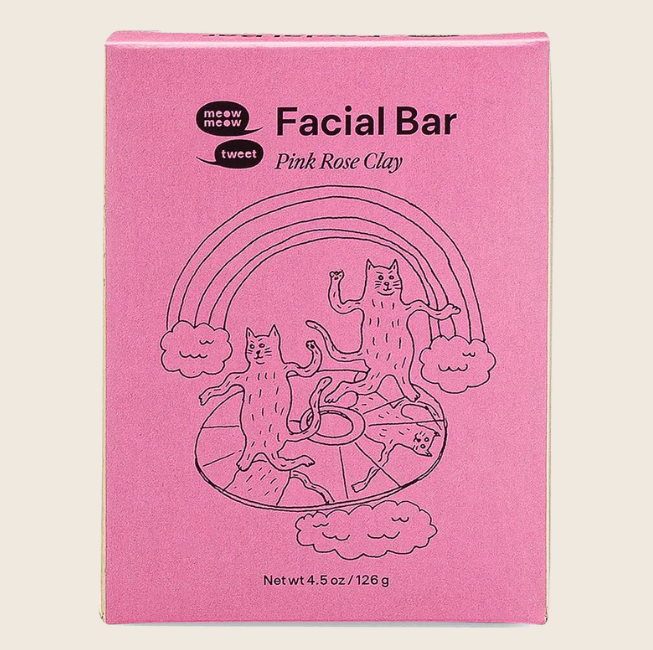

Hatékony, hulladék- és szódabikarbónamentes? A vegán, teljesen természetes dezodor ! Ez a jól bevált növények és ásványi anyagok jellegzetes keveréke egy kényelmes biológiailag lebomló papírcsőben. Az illata lágyszárú-virágos, állaga púderes balzsam.
Huf 5000-
Arc Krém
Kényeztesse bőrét álomszép csodakrémünkkel! Tele van tápanyagokban gazdag olajokkal és vajakkal, így tetőtől talpig használható. A klasszikus illatú bio növényi olajok, mint a tamanu-, csipkebogyó- és tökmagolaj, a száraz, viszkető bőrre hatnak, miközben csökkentik a hegeket és a finom vonalakat. Az érzékeny arcbőrre és az egész testre kifejlesztve gyorsan behatol anélkül, hogy eltömítené a pórusokat. Az illata fűszeres és diós, az állaga pedig balzsamszerű.
Huf 10000-
Arc Olaj
Javítsa és védje a bőrt antioxidánsokkal teli arcolajunkkal. A környezeti stresszhatások okozta károsodások kezelésére kifejlesztett buja olaj javítja a bőr rugalmasságát, csökkenti a gyulladást, és segít megtartani a nedvességet. Tápanyagokban gazdag, és zsíros érzet nélkül szívódik be. Illata mézes és virágos, textúrája pedig selymes.
Huf 10000-
Test Szappan
A levendula kedvelői számára ez az illatos és hidratáló szappan nyomokban citromot tartalmaz, hogy tonizálja és megnyugtassa a bőrt.
Huf 4500-
Ajakápoló
Az Axiology barátaink megcsinálták a lehetetlent - olyan színeket készítettek, amelyeket bárhová felvihetsz a testedre, alacsony hulladékkibocsátású, műanyagmentes csomagolásban. Ezek a bárhol viselhető pálcikák egy komposztálható papírcsőben érkeznek. A telített és gyönyörű színpaletta minden bőrtónuson gyönyörű. Használd a szemeden, az ajkadon, az arcodon vagy bárhol máshol!
Huf 9000-
Dezodor Krém
Természetes dezodorkrémünk egész nap friss illatot biztosít. A szódabikarbóna és az erős illóolajok felveszik a harcot a hónaljszagért felelős baktériumokkal, míg a tápláló növényi olajok és vajak megnyugtatják és ápolják a hónaljbőrt. Az illata édes virágos, az állaga pedig krémes.
Huf 6000-

Arc Tisztító
Habosítsd be magad a rózsás csodahatásért! Rózsaszín rózsás agyag szappanunk gyengéd és hidratáló arcszappan minden bőrtípusra, nyugtató virágillattal. A francia rózsaszín agyag és a zúzott rózsaszirmok a legkönnyebb hámlasztással tisztítják és méregtelenítik a bőrt. Az illat finom, rózsás geránium, amely nyugtatja a bőrt, miközben tonizálja és tisztítja az arcbőrt.
Huf 5000-
Bambusz Fésű
A bambusz- és gumikefék puha és kényelmes érzést nyújtanak a fejen, és fájdalommentesen kiszedik a kócokat, miközben gyengéden masszírozzák a fejbőrt. Tökéletesen úgy tervezték, hogy könnyen mozogjon a hajadon, ami egyszerűvé és könnyűvé teszi a formázást! Könnyen hordozható kis méretben, és nagyobb lapát alakban kapható.
Huf 7000-
Tusfürdő
Kéz- és testmosóinkat a hagyományos kasztil szappanok szellemében, hagyományosan, kézzel készítjük. A bio aloe verával töltött krémes hab anélkül tisztít, hogy megfosztaná bőrét a létfontosságú nedvességtől. Az illat édes virágos, egy csipetnyi friss citrusfélével, az állaga pedig sűrű gél.
Huf 13000-
Tengervizes Hajspré
növényi eredetű textúrázó sprét, amelynek csodálatos illata van, működik, és egy végtelenül újrahasznosítható fém flakonba van csomagolva. Az aloe, a tengeri moszat kivonatok és a tengeri só együttesen textúrát, testet és tengerparti ihletésű hullámokat kölcsönöz a hajnak - anélkül, hogy elnehezítené vagy merevvé tenné azt. Az illat friss és rózsás.